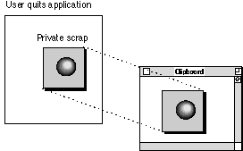
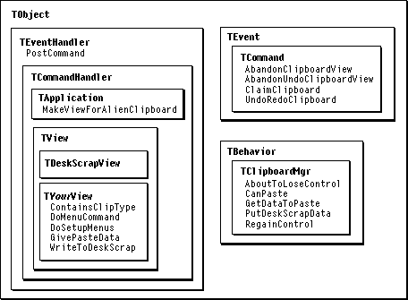

Legacy Document
Important: The information in this document is obsolete and should not be used for new development.
Important: The information in this document is obsolete and should not be used for new development.


Overview
The Macintosh Operating System provides a number of mechanisms for exchanging data between applications, from static copy and paste operations using the Clipboard, to drag-and-drop data transfer, to dynamic data exchange using the Edition Manager. Supporting the Macintosh Clipboard is a vital component of any application because users expect this capability to be available.MacApp's Clipboard support is designed to help your application work with the Macintosh Clipboard. The following terms are used to describe Clipboard functions:
- Desk scrap, or public scrap. The place in the operating system where data is stored when it is cut (or copied) and pasted between applications. The desk scrap can be in memory or on disk.
- Desk scrap data type, or scrap type. A specific type of data that can be stored in the desk scrap. A desk scrap data type is specified by a sequence of four characters, similar to a resource type. The standard types are text (a series of ASCII characters identified by the scrap type
'TEXT') and picture (a QuickDraw picture identified by the scrap type'PICT'). Other types include'styl'for text style information and'moov'for QuickTime movie data.- Private scrap. The location in which an application keeps its own scrap data.
- Scrap data. Data, stored in a public or private scrap, that can be moved between applications through Clipboard operations.
Basic Clipboard Operations
Clipboard support requires a combination of the following activities:
- storing and retrieving standard data types
- storing and retrieving an application's private data types
- converting between standard and private data types
- providing a view to display data
Using the Desk Scrap
An application supplies data for the Clipboard by putting it on the desk scrap, along with a data type to identify it. Data is put on the desk scrap with the Toolbox callPutScrap. An application can put more than one data type on the desk scrap. For example, it may put data in a private format, as well as in the public formats'TEXT'and'PICT'. There should not be more than one item on the desk scrap for each data type, so it is common to call the Toolbox routineZeroScrapto clear the desk scrap, then make one or more calls toPutScrapto add data of different types.
When pasting data from the desk scrap, an application looks first for its most preferred data type, but it may use other data types if the preferred type is not available. To find out whether data of a desired type is available, an application uses the Toolbox call
- Note
- An application's private desk scrap data types can be registered with Apple Computer so that they will not be used by other applications. You can register types at the World Wide Web location http://dev.info.apple.com/cftype/main.html.

GetScrap, which is described in the next section.Using the Toolbox GetScrap Routine
You use theGetScraproutine from the Macintosh Scrap Manager to copy data from the Clipboard. TheGetScraproutine is declared as follows:
long GetScrap (Handle hDest, ResType theType, long& offset);Depending on how you set the hDest parameter, you can use theGetScraproutine for one of two purposes: to determine if the scrap contains data of a specified type or to retrieve desk scrap data of the specified type in the passed handle.
You normally use
- If you want to know only if the desk scrap contains data of a specified type, you set the
hDestfield toNULL. If data is present,GetScrapreturns the length of the data and sets the offset parameter to the location of the data in the desk scrap. Otherwise, it returns a negative error code.- If you want to retrieve desk scrap data, you pass an existing destination handle along with the data type.
GetScrapbehaves as before, except that if the data is present, it stores it in the passed handle.
GetScrapby calling it once to determine if the appropriate data type is in the scrap. If it is, you then allocate a handle for the data and callGetScrapagain to copy the data into that handle. Code to read Clipboard data often looks something like the following:
long datasize, offset, err; // First see if your scrap type is present. datasize = GetScrap(NULL, kMyPrivateScrapType, &offset); if (datasize > 0) { // Now copy the scrap data into an existing handle field. // NOTE: Some apps set the handle size to the returned data size // value before calling GetScrap the second time. err= GetScrap(fMyDataHandle, kMyPrivateScrapType, &offset); // If we can't read data, cause a failure and display the error. if (err < 0) FailOSErr((short) err); }In this example, the fMyDataHandle field is a data handle that was created earlier. For another example of reading desk scrap data, see "Recipe--Creating a Clipboard View for Your Private Data Type," beginning on page 508.Within your application, you can get Clipboard data by calling the global Clipboard manager's
GetDataToPastemethod. The manager is described in "The Clipboard Manager," beginning on page 504.Using a Private Scrap
Your application can set up a private scrap for storing data that is cut and pasted internally. If you cut and paste only the standard data types, it's probably easier to use the desk scrap, but if you need to work with large amounts of data, a private scrap may result in faster Clipboard operations within your application.To use a private scrap, your application must be able to convert data from its private scrap format to a public desk scrap format when it is switched out, and back from the public desk scrap format to its private format when it is switched in. Figure 22-1 shows an application copying its private scrap to the Clipboard when a user quits the application.
Figure 22-1 An application copying its private scrap to the Clipboard

MacApp's Clipboard Support
MacApp's Clipboard support is designed to help your application manage a private scrap. It provides facilities to
When the user cuts or copies data in your application, you create a view to display and handle the data. The display view usually has the same view type as the one that originally displayed the data. This makes it convenient for Clipboard data to be stored in your application's private format, which is easy to use within the application. However, when the user quits or switches to another program, a well-behaved application puts information on the Clipboard in one or both of the standard data types (text and picture), for other applications to use, as well as in its private format.
- support commands that cut, copy, clear, and paste data
- manage a Clipboard view to display the current Clipboard data
- interact with the desk scrap to get data when your application is switched in or put data when your application is switched out
- work with the standard desk scrap data types
'TEXT'and'PICT'
MacApp's default Clipboard support provides the following features:
Your application can take advantage of MacApp's default Clipboard support by adding the following line to the file YourApp
- an Edit menu with choices for Cut, Copy, Paste, Clear, and Show Clipboard
- a default Clipboard view, of type
TDeskScrapView, that is shown when the user chooses Show Clipboard (The default Clipboard view can display the two standard desk scrap data types, text and picture.)
.r:
include "Defaults.rsrc" 'CMNU' (mEdit);This line includes the'CMNU'resource for the Edit menu, which is defined in the fileDefaults.r.
- Note
- You don't have to create a view to display
'PICT'or'TEXT'data from the desk scrap. When your application starts, MacApp automatically creates an object of typeTDeskScrapViewto display these data types.More Sophisticated Clipboard Support
With a little extra work, your application can support its own private desk scrap data types and provide more sophisticated Clipboard support. MacApp provides several facilities to help you do so.The Clipboard Manager
TheTClipboardMgrclass is a subclass ofTBehaviorthat manages the application's interaction with the Scrap Manager and maintains a view for the current Clipboard. MacApp creates a singleTClipboardMgrobject during initialization of your application and assigns it to the global variablegClipboardMgr. The Clipboard manager works together with your view, application, and document classes to support Clipboard activity in your application. The classes and methods used to provide Clipboard support are shown in Figure 22-2.Figure 22-2 Classes and methods used to provide Clipboard support

MacApp calls methods of
gClipboardMgrat the appropriate time; your application also calls methods ofgClipboardMgrduring Clipboard operations. The following methods ofTClipboardMgrare the most frequently used:
AboutToLoseControl- MacApp calls the
AboutToLoseControlmethod when your application is switched out. It gives the current Clipboard view a chance to write its data, converting from a private to a standard data type, if necessary.CanPaste- Your view class calls
CanPaste to let the Clipboard manager know what kind of data it can paste. If that data is available, the Clipboard manager enables the Paste menu command.GetDataToPaste- The
GetDataToPastemethod asks the current Clipboard view to return data of the specified type by calling the view'sGivePasteDatamethod. You overrideGivePasteDatain the view class you use to provide a Clipboard view. Your Paste command object might callGetDataToPasteto get data to paste.PutDeskScrapData- You pass a data handle and a data type to the
PutDeskScrapDatamethod; it writes the handle to the desk scrap.RegainControl- MacApp calls
RegainControlwhen your application is switched in. It callsCheckDeskScrapto see if there is any new data on the desk scrap. If so, your application gets a chance to make a view to read and display the new data.Clipboard Support in TCommand
TheTCommandclass supplies several fields and methods that are used in working with the Clipboard:
The recipes that follow describe how your application works with MacApp to provide custom Clipboard support.
fClipboardView- The
fClipboardViewfield identifies the view for displaying Clipboard data when a command is in the do or redo phase.fUndoClipboardView- The
fUndoClipboardViewfield identifies the view for displaying Clipboard data when the command is in the undo phase.AbandonClipboardView- The
AbandonClipboardViewmethod frees the view referenced byfClipboardView, when appropriate.AbandonUndoClipboardView- The
AbandonUndoClipboardViewmethod frees the view referenced byfUndoClipboardView, when appropriate.ClaimClipboard- The
ClaimClipboardmethod installs the passed view as thefClipboardViewand saves the previous value offClipboardViewinfUndoClipboardView.UndoRedoClipboard- The
UndoRedoClipboardmethod installs the appropriate Clipboard view, depending on whether the current request is to undo or redo the command.